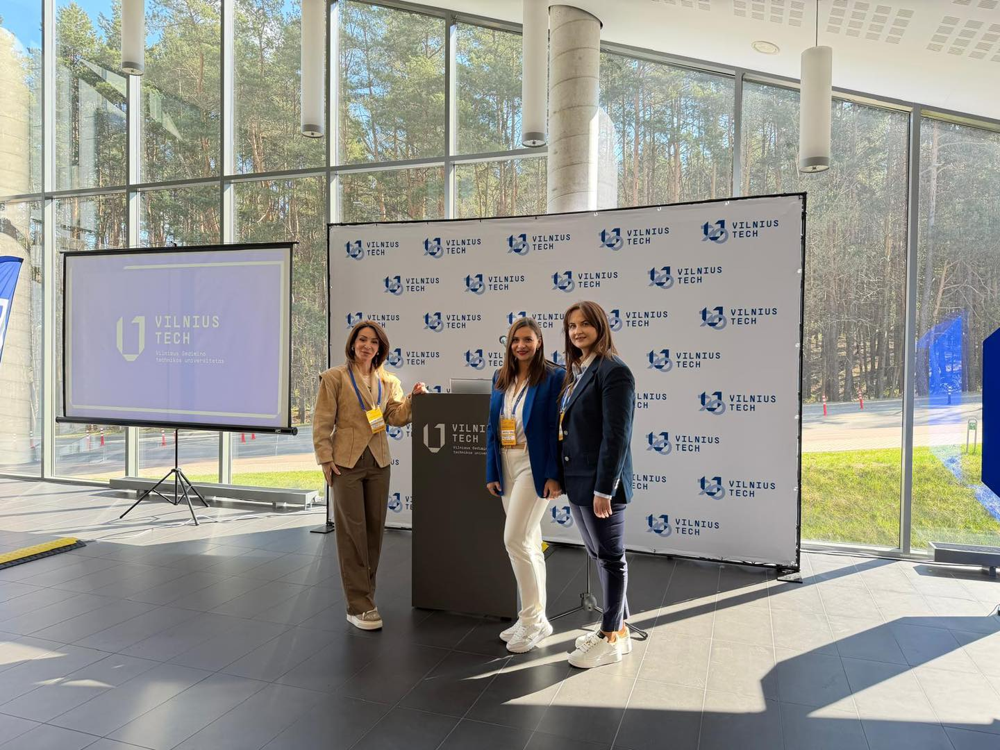
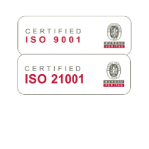
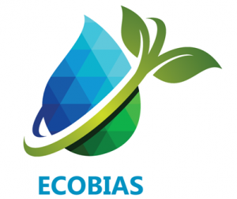

Moderan univerzitetski portal sa pregledom fakulteta, studentskih informacija, međunarodne saradnje i aktuelnosti na jednom mjestu.
Studiranje na Internacionalnom Univerzitetu Travnik nije samo obrazovanje, već i iskustvo koje uključuje međunarodnu saradnju, projekte, druženje i razvoj profesionalnih vještina.



Univerzitetska biblioteka, osnovana 2010. godine, služi kao središte podrške akademskoj zajednici kroz sistematsko prikupljanje, obradu, čuvanje i distribuciju bibliotečke građe i informacija. Naša biblioteka je ključni resurs za unapređenje nastavnog i naučno-istraživačkog procesa na sedam fakulteta: Ekonomskom, Saobraćajnom, Politehničkom, Ekološkom, Medijima i Komunikacijama, Pravnom i Fakultetu informacionih tehnologija. Korisnici knjižnog fonda obuhvaćaju različite skupine, uključujući nastavno osoblje, znanstvene i stručne saradnike, uposlenike, kao i studente dodiplomskog i postdiplomskog studija. Svi korisnici trebaju poštovati odredbe Pravilnika o radu biblioteke.
Cilj Univerzitetske biblioteke je da obezbijedi pristup relevantnim resursima potrebnim za kvalitetno obrazovanje i istraživanje. Ulažemo napore da naši korisnici imaju pristup najnovijim informacijama i znanjima, što doprinosi njihovom profesionalnom razvoju i akademskom uspjehu.
Biblioteka se sastoji od različitih odjeljenja, koja su prilagođena potrebama naših fakulteta:
Internacionalni univerzitet Travnik pruža kvalitetno obrazovanje uz savremene studijske programe i međunarodnu saradnju.
Studenata
Fakulteta
Studijskih programa
Partnerskih univerziteta

